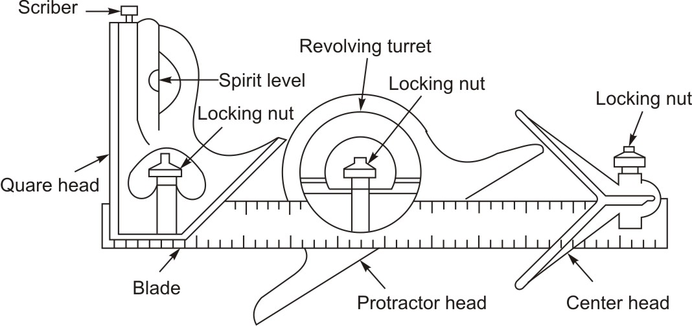
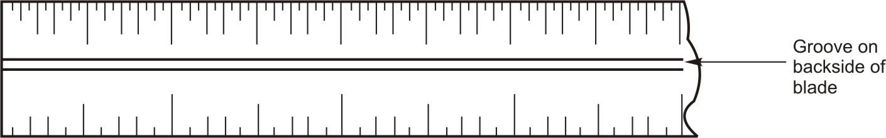
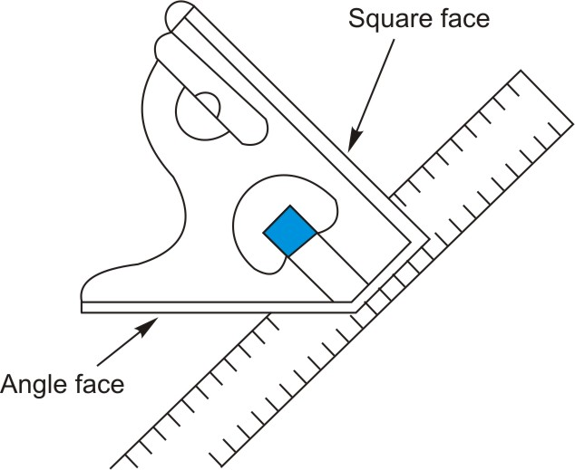
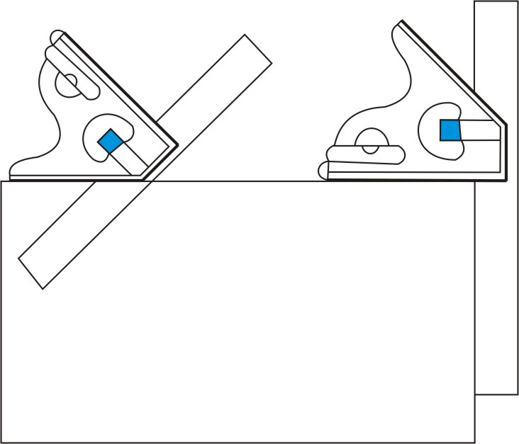
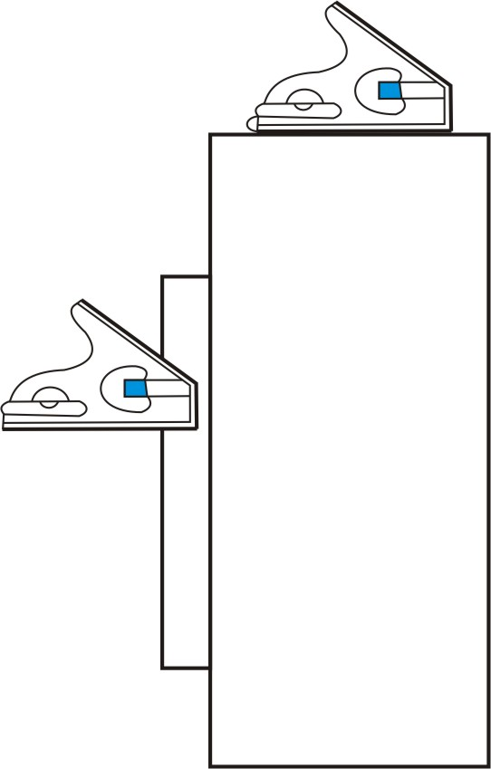
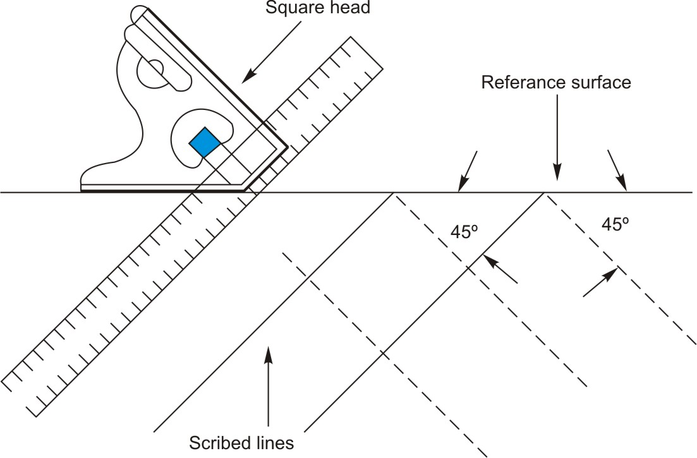
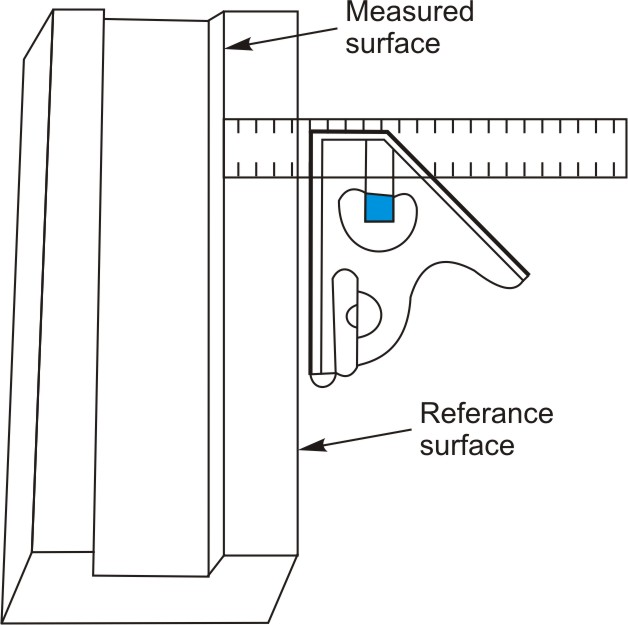
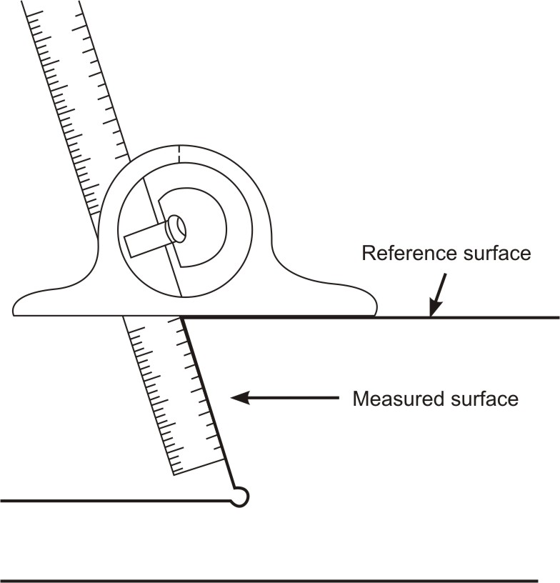
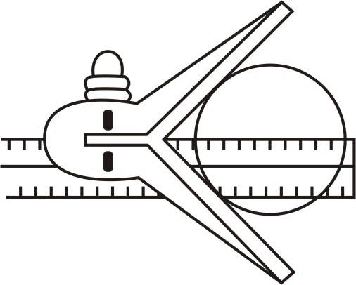
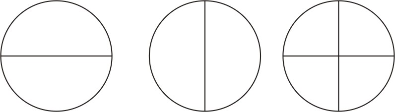

The combination set, as its name implies, is a tool that has several uses. The set consists of a blade (graduated rule), square head, protractor head, and center head. The grooved rule is used with each head. The groove permits the rule to be moved into position and locked.

Figure 1: Combination setThe blade is designed to allow the different heads to slide along the blade and be clamped at any desired location. The groove in the blade is concave to eliminate dirt buildup and permit a free and easy slide for the heads. By removing all the heads, the blade may be used alone as a rule.

Figure 2: Blade with grooveA combination square has a ruled blade with an angled head that slides along the blade and can be repositioned by locking nut at any desired place along the graduated, rule-type blade to suit the job. The square head is designed with a 45o and 90o edge. The square head and blade can also be used as a marking gauge to scribe lines at a 45o angle. A convenient scriber is held frictionally in the head by a small brass bushing. By extending the blade below the square or above the square, it can be used as a depth gage or height gage.
Level in the angled head is used to make sure your work is true horizontal (level) or true vertical (plumb). The trick is to always use the longest level possible. The level makes it convenient to square a piece of material with a surface and at the same time will indicate if the edge or surface of the material is level. The square head can also be used as a simple level.

Figure 3: Square head
Figure 4: Use the head to check for level
Figure 5: Checking horizontal surface
Figure 6: Scribing lines at 45o using square head
Figure 7: Measuring surface using square headThe protractor head is equipped with a revolving turret that is graduated in degrees from 0 to 180 or to 90 in either direction. It is used to measure or lay out angles to an accuracy of 1°. The base of the protractor head is held against the reference surface. The blade is held to the turret. The revolving turret is turned until the included angle of the blade and protractor head coincides with the angle to be measured.
Using protractor head for measuring and marking an angle
Figure 8: Using protractor headThe center head, when inserted on the blade, is used to locate and lay out the center of cylindrical workpieces.
Using the center head
Figure 9
Figure 10: Laying out center on cylindrical workpiece using center head| ← Tutorial 2 | Tutorial 4 → |